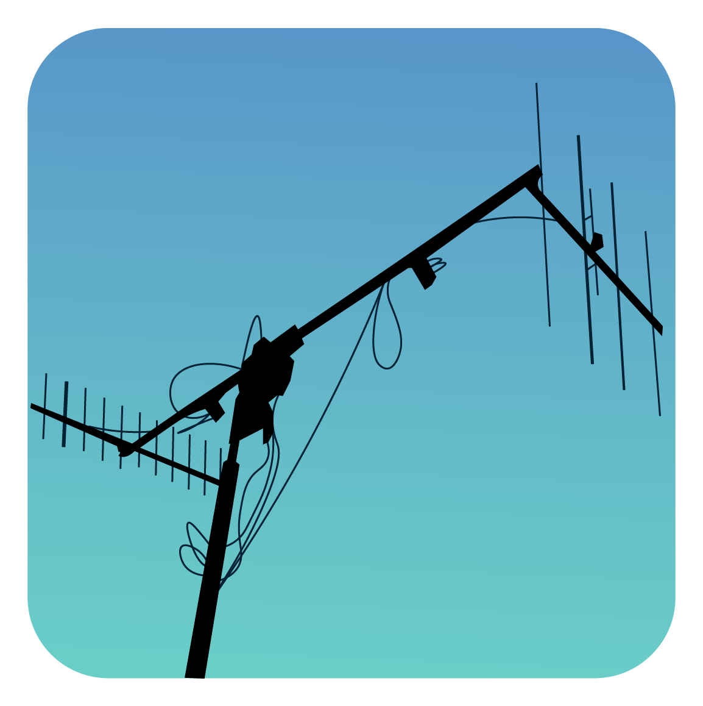
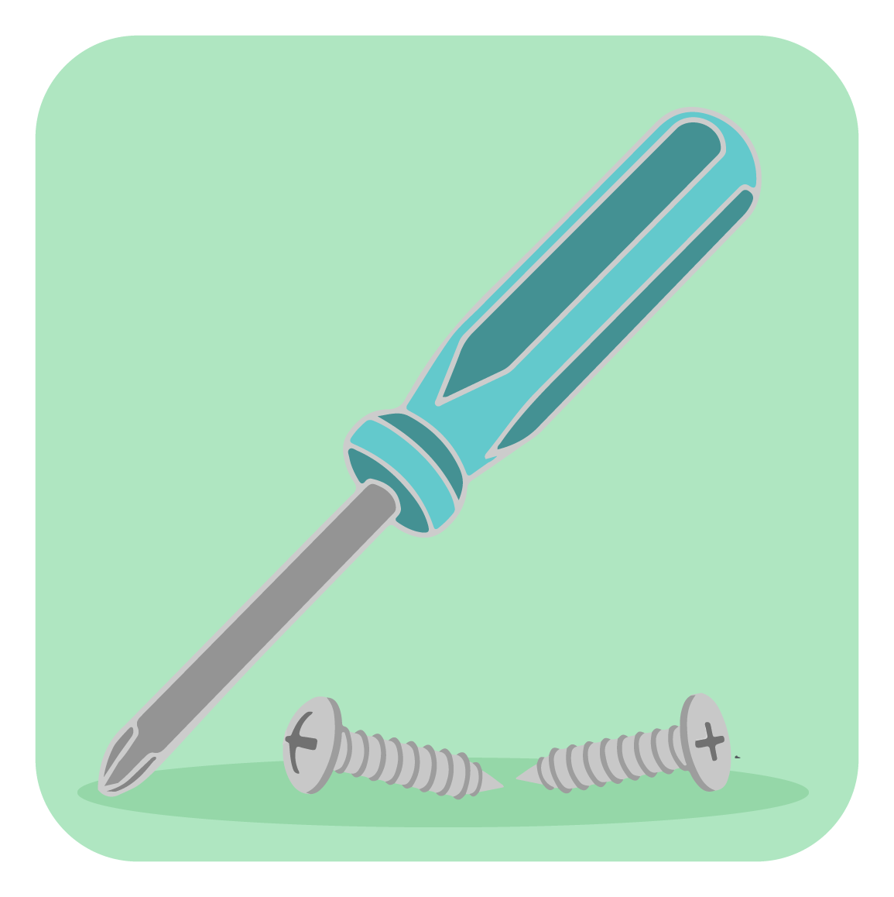
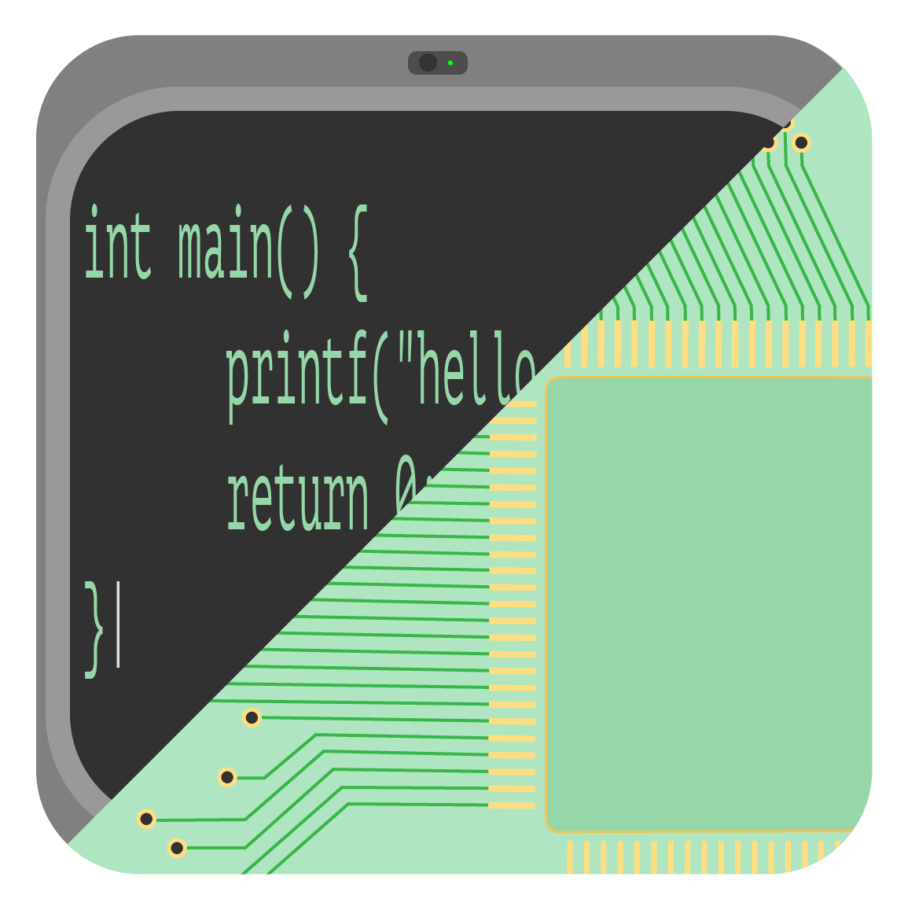
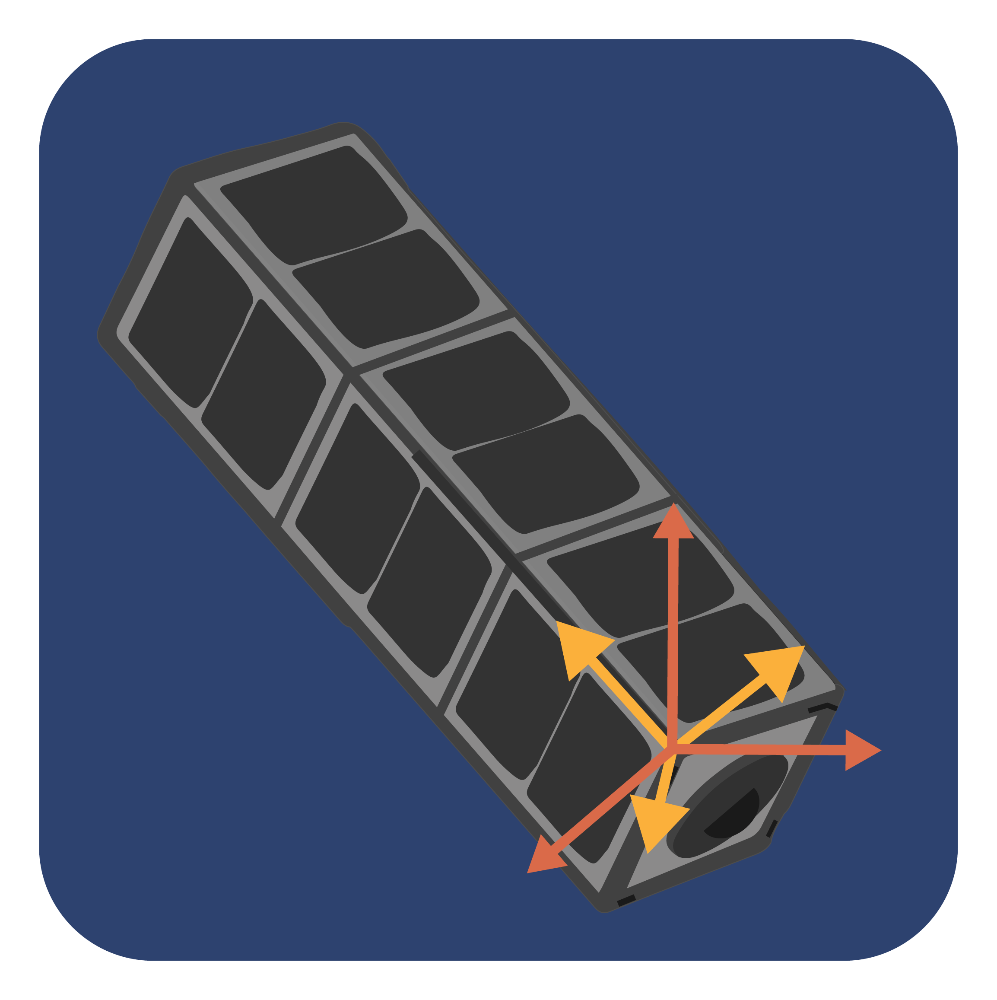

Meet The Team
Our Team Leads

Hello there, my name is Aniket Prabhudesai and I am currently the Systems Team lead for York University's
CubeSat mission called ESSENCE. I graduated with a Bachelor's of Space Engineering degree with honors
and I am currently pursuing a Master's in Applied Science degree at York University. I will be
continuing my graduate studies in parallel with this mission till the foreseeable future.

My name is Jessie Atamanchuk and I'm a recent graduate of Space Engineering at York University. I am the
communications team leads on the ESSENCE mission. This means that my team and I are working on all of
the systems required for the satellite to communicate with the university. We are responsible for the
onboard systems that will receive and transmit scientific data and satellite information to the ground.
On the university campus we are engineering an operation centre and ground station are receive satellite
data and send out commands. An important task for the communications team is interfacing with Canadian
and international radio organisations and ministries to get licensing.

My name is Jordan, and I'm a 2nd year space engineering student. Working on this project has given me
application and insight into a future career as an engineer.

Hey! My name is Fady Aziz I am student at Seneca College in Electronics Engineering Technology, and I am
doing a Master’s in computer science in AI. I am the team leader of Software team and Electrical team I
have been working with ESSENCE since 2019. My goal after graduation is to work in space projects.

My name is Mike Alger and I have been working in the field of space system design since my graduate
degree work at Ryerson University. Since 2009 I have gained experience with; satellite attitude
modeling, guidance and control, planetary landing systems, generation and real time execution of C code
from model based programming languages such as Matlab and MATRIXX, and robust control analysis based on
linear fractional transforms. Upon returning from industry to study for a PhD, I have taken the role as
ADCS lead for both the DESCENT and ESSENCE CubeSat missions and am using this opportunity to help
undergraduate and graduate students learn how to develop software for ADCS and other automated systems.
My name is Hannah Yorke Gambhir and I am the current Project Manager (PM) of ESSENCE. I joined back in
January of this year and started off as the Mechanical Team lead before becoming the PM. I am in my 4th
and final year (Yay!) of Mechanical Engineering here at York. After I graduate I hope to go into a field
of engineering education to develop kits for classroom use and make it more accessible to everyone.
Currently I am a research assistant focusing on renewable energy water filtration systems. In my free
time I am the Ontario Engineering Challenge Master for Destination Imagination.
My name is Rita Khramova and I am the Co-Manager of ESSENCE. I was a part of the communication team and
was responsible for radio-licensing. I am a 4th year Space Engineering student at York, and currently
taking a part in research focusing on Jupiter’s atmosphere.